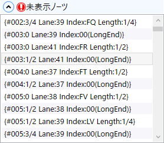
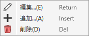

未表示ノーツ
譜面表示エリアに表示されていないノートの一覧です。
説明
- ダブルプレイ譜面をスタイルBeat_7で表示している場合などに未表示ノーツが発生します。
-
未表示ノーツが存在する場合、エキスパンダーのヘッダー部分に
 が表示されます。
が表示されます。
-
項目を選択すると、そのノートが存在する時間位置の付近にスクロールします。
-
リスト上で右クリックすると、ノート配置に関するコンテキストメニューが開きます。

-
 編集: ノート編集ウィンドウを開きます。
編集: ノート編集ウィンドウを開きます。
-
 追加: ノート編集ウィンドウを開き、新たにノートを追加します。
追加: ノート編集ウィンドウを開き、新たにノートを追加します。
-
 削除: このリストで選択されているノートを削除します。
削除: このリストで選択されているノートを削除します。
- 「追加」はリストが空の状態でも行えます。
- このリストから「追加」することで、「スタイル」で対応していない任意のレーンにノートを配置できます。
-